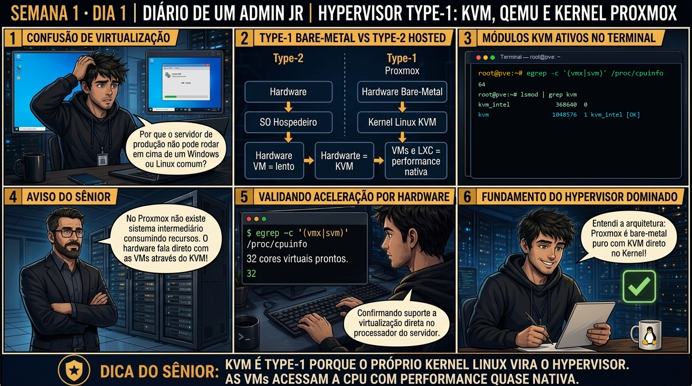

DIARIO DE UM ADMIN JR. | PROXMOX VE & PBS — DA BASE AO CLUSTER
🔗 Boas-vindas à Fase Proxmox VE & PBS: Você dominou os fundamentos de administração Linux. Agora você entra no nível de engenharia de virtualização: transformar servidores físicos bare-metal em pools elásticos de máquinas virtuais e containers de alta densidade.
🔓 Privilégio de hoje: Leitura e Auditoria Bare-Metal (Privilégio Zero). Você acabou de receber o acesso root ao nó físico. Hoje você apenas observa e valida o subsistema KVM e os daemons do PVE — nenhuma máquina virtual será alterada.
Semana 1 · Dia 1 | Nível Júnior — Virtualização
Hypervisor Type-1: KVM, QEMU e o Kernel Debian
a base da virtualização bare-metal: por que o Proxmox roda direto no hardware
ANTES DE ALTERAR, OBSERVE. DEPOIS DE ALTERAR, VALIDE.

1. O chamado
Você recebeu o chamado #1001: "O data center entregou um servidor Dell PowerEdge R750 recém-instalado com Proxmox VE 8.2 (IP 192.168.1.100). A equipe de desenvolvimento tentou iniciar uma máquina virtual de testes e recebeu o erro KVM: disabled by BIOS. Seu objetivo é: (1) Confirmar se o host é um Type-1 Bare-Metal; (2) Inspecionar as instruções de aceleração VT-x/AMD-V; (3) Auditar se o módulo KVM está carregado; e (4) Coletar o baseline com pveversion -v sem alterar nenhuma configuração em produção."
💡 Passa o mouse nas palavras destacadas pra ver uma dica rápida — clica se quiser a explicação completa com analogia.
2. O sênior te conta
🧑🏫 antes dos termos técnicos, a história de hoje
Hoje o Júnior chegou animado com o primeiro servidor Dell PowerEdge da empresa, tirou da caixa, instalou o Proxmox e tentou subir a primeira máquina virtual. Em menos de dez segundos, a tela cuspiu um erro vermelho na cara dele: KVM: disabled by BIOS. Ele entrou em pânico, achou que a ISO do Debian tinha corrompido durante o download e já ia reiniciar o servidor com um pendrive pra reinstalar tudo do zero.
Puxei a cadeira do lado dele, segurei a mão dele no teclado e perguntei: 'Antes de culpar o software e reinstalar o sistema, você conferiu se o hardware está com a chave mestra ligada?'. Ele ficou sem entender. Expliquei: no Proxmox, o hypervisor é Type-1 (Bare-Metal). As VMs não rodam emuladas por um programinha desktop lento; elas executam direto no silício da CPU através do módulo do kernel kvm usando as instruções Intel VT-x ou AMD-V. Se a BIOS de fábrica veio com essa flag desligada, o processador simplesmente se recusa a criar o ambiente de virtualização.
Rodamos juntos o egrep '(vmx|svm)' /proc/cpuinfo e mostrei que o processador tinha 64 núcleos esperando trabalho, mas a flag estava zerada. Reiniciamos, ativamos o VT-x no iDRAC, e o KVM subiu limpo no primeiro boot. Foi essa a virada de chave dele hoje: nunca tente consertar no software o que está desativado no hardware. É exatamente essa auditoria de silício que você vai treinar agora.
3. Decodificador de conceitos
Clica em qualquer termo pra ver a definição completa e uma analogia do dia a dia:
4. Ferramentas e leitura da evidência
Comando / Parâmetro
O que observar e por que importa
pveversion -v
Exibe o inventário detalhado de versões: pve-manager, proxmox-kernel, qemu-server e zfsutils. Imprescindível para baseline de suporte.
lsmod | grep kvm
Verifica se o módulo genérico kvm e o módulo específico do processador (kvm_intel ou kvm_amd) estão carregados na memória do Kernel.
egrep -c '(vmx|svm)' /proc/cpuinfo
Conta quantas threads de CPU física possuem as flags de aceleração de hardware ativas. O resultado deve ser igual ao número de vCPUs físicas.
systemctl status pvedaemon pveproxy pvestatd
Confirma a saúde dos daemons centrais de API, servidor web HTTPS (:8006) e coleta de métricas de hardware do nó.
5. Laboratório guiado — pegue na mão, comando por comando
🖥️ Onde executar: Terminal SSH direto no Nó físico Proxmox (logado como root@pve:~#) ou via console no monitor local.
Segurança: Execute os comandos em nó Proxmox de laboratório ou VM aninhada. Não altere arquivos de configuração do Kernel sem aprovação.
Ação: Confirme se as extensões de virtualização por hardware (VT-x ou AMD-V) estão ativas no /proc/cpuinfo.
egrep -c '(vmx|svm)' /proc/cpuinfo
Resultado esperado: Lista completa com versões do pve-manager, proxmox-kernel, qemu-server e zfsutils-linux.
Por que fizemos isso: Auditar a presença das flags vmx (Intel) ou svm (AMD) no /proc/cpuinfo confirma se o processador físico e a BIOS estão com a aceleração de virtualização ativa antes de rodar qualquer VM.
Cilada comum: Presumir que o servidor novo já vem com virtualização ativa de fábrica — fabricantes como Dell e HP frequentemente enviam servidores com VT-x desabilitado na BIOS para economia de energia.
Ação: Valide se os módulos KVM do kernel Debian foram carregados corretamente na memória.
lsmod | grep kvm
Resultado esperado: Módulos kvm e kvm_intel (ou kvm_amd) listados com contadores de uso maiores que zero.
Por que fizemos isso: O comando lsmod inspeciona os módulos carregados no Kernel Debian; a presença conjunta de 'kvm' e 'kvm_intel' (ou 'kvm_amd') prova que o kernel assumiu o controle das instruções em Ring 0.
Cilada comum: Achar que o módulo kvm carrega sozinho com VT-x desativado; o kernel aborta o carregamento e deixa o QEMU operando em emulação lenta de software.
Ação: Colete o inventário de versões de todos os subsistemas do Proxmox com pveversion.
pveversion -v
Resultado esperado: Um número inteiro positivo exatamente igual à quantidade de vCPUs/threads exibidas em lscpu.
Por que fizemos isso: O pveversion com flag -v gera o manifesto completo de versões de todos os pacotes (kernel, qemu-server, zfsutils), servindo como baseline de conformidade da infraestrutura.
Cilada comum: Rodar apenas 'pveversion' sem o '-v' em chamados de suporte, omitindo a revisão exata do kernel necessária para diagnosticar bugs de compatibilidade.
Ação: Inspecione a saúde dos daemons centrais de API, servidor web HTTPS e métricas.
systemctl status pvedaemon pveproxy pvestatd
Resultado esperado: Três linhas retornando active, confirmando que a API e a GUI HTTPS (:8006) estão operacionais.
Por que fizemos isso: Validar os daemons pvedaemon (API backend), pveproxy (servidor HTTPS porta 8006) e pvestatd (coletor RRD) garante que a camada de controle do Proxmox está 100% operacional.
Cilada comum: Reiniciar o nó físico inteiro quando a interface web não responder; se o pveproxy travar, as VMs continuam rodando intactas no KVM — basta reiniciar o serviço específico.
🧑🏫 Aqui entra o Mentor (em breve): se o comando lsmod | grep kvm retornou vazio ou o pveproxy estiver em estado failed, este é o ponto onde o chat com o Sênior-IA vai abrir para diagnosticar o travamento da API ou o setup da BIOS.
Ação: Registre a evidência técnica de conformidade no chamado operacional.
# Baseline do nó físico homologado com sucesso.
Resultado esperado: Nó auditado com 100% de conformidade técnica e pronto para a criação de máquinas virtuais.
Por que fizemos isso: Registrar formalmente as flags, módulos e baseline de versões no chamado documenta a entrega do nó homologado e previne retrabalho.
Cilada comum: Encerrar o chamado sem anexar as saídas de CPU e kernel, deixando a infraestrutura sem rastreabilidade de homologação.
6. Antes de ver as opções — tenta responder
🧠 Recall ativo: Se o KVM é um módulo do Kernel Linux, por que o Proxmox VE é considerado um Hypervisor Type-1 (Bare-Metal) e não um Type-2 (Hosted como VirtualBox)?
Porque no Proxmox VE o próprio Kernel Linux É o hypervisor. O módulo KVM assume o controle direto das instruções de virtualização da CPU (Intel VMX / AMD SVM) em Ring 0. Não existe nenhum sistema operacional cliente intermediário adicionando overhead ou atraso de escalonamento.
QUESTÃO 1 de 3
7. Questão comentada — clica numa alternativa
Qual é a razão técnica fundamental pela qual o Proxmox VE entrega performance de CPU e memória quase nativas para máquinas virtuais?
💡 Analogia do Sênior para Fixar: Na arquitetura do Proxmox sobre Hypervisor Type-1: KVM, QEMU e o Kernel Debian: O KVM/QEMU opera como o motorista dedicado de cada passageiro, alocando recursos virtuais em contato direto com o kernel.
QUESTÃO 2 de 3 — cenário de erro real
7.1 Falha ao iniciar máquina virtual no host recém-instalado
Você tenta iniciar uma máquina virtual recém-criada através do terminal e recebe o seguinte erro crítico:
$ qm start 100
TASK ERROR: KVM virtualization configured, but not supported by hardware/kernel
$ dmesg | grep -i kvm
[ 4.120451] kvm: disabled by bios
Com base no log do dmesg e na mensagem da tarefa, qual é a causa raiz exata e o procedimento correto?
💡 Analogia do Sênior para Fixar: Ao diagnosticar problemas em Hypervisor Type-1: KVM, QEMU e o Kernel Debian: É como inspecionar as conexões do storage e o barramento PCIe antes de declarar falha de software.
QUESTÃO 3 de 3 — detalhe que confunde todo iniciante
7.2 "Se o KVM já faz a virtualização, por que precisamos do QEMU?"
Um colega de equipe júnior olha o arquivo de processos do servidor e vê o processo /usr/bin/kvm apontando para o binário do QEMU:
Qual é a divisão exata de responsabilidades entre o KVM e o QEMU no Proxmox VE?
💡 Analogia do Sênior para Fixar: A governança e resiliência em Hypervisor Type-1: KVM, QEMU e o Kernel Debian: Funciona como a política de contenção e redundância do datacenter, garantindo que o cluster nunca perca quorum.
8. Procedimento profissional
Conecte-se ao nó Proxmox via SSH ou console físico com sua conta de administração.
Execute pveversion -v para auditar todas as versões de pacotes e certificar-se de que não há bibliotecas divergentes.
Inspecione o carregamento dos módulos do Kernel executando lsmod | grep kvm e confirme a presença de kvm_intel ou kvm_amd.
Valide a contagem de cores com virtualização ativa em /proc/cpuinfo garantindo que todas as threads possuem as flags vmx ou svm.
Confirme que os daemons de gerenciamento (pvedaemon, pveproxy e pvestatd) estão ativos e saudáveis.
Documente o relatório de conformidade no chamado técnico antes de liberar o nó para a criação de máquinas virtuais.
Prevenção
Mantenha o inventário de hardware e baseline de BIOS atualizados; nunca altere parâmetros de virtualização física sem agendamento e teste em ambiente isolado.
9. Validação e encerramento
O nó físico opera como um Hypervisor Type-1 Bare-Metal legítimo.
Os módulos do Kernel KVM foram validados em memória com aceleração direta em Ring 0.
As extensões VT-x/AMD-V da CPU foram auditadas e correspondem ao total de threads do processador.
Os daemons pvedaemon, pveproxy e pvestatd estão saudáveis e atendendo requisições.
Nenhuma alteração indevida ou destrutiva foi realizada no servidor.
Rollback e limites
Como o procedimento desta primeira aula é estritamente de diagnóstico e leitura de arquitetura, o rollback técnico é nulo. Caso encontre extensões de CPU desativadas, o único ajuste necessário é na BIOS/UEFI do hardware físico.
💡 Sobre repetição espaçada: Os conceitos de Hypervisor Type-1, KVM, QEMU, VT-x/AMD-V e Ring 0 entrarão no seu baralho de revisão Anki. Eles formarão a base para entender dimensionamento de hardware no Dia 2 e criação de VMs na Semana 2.
10. Resposta final
Alternativa correta: B. O Proxmox VE entrega performance de CPU e memória quase nativas porque o módulo KVM no Kernel Debian executa as instruções da VM diretamente no processador físico através das extensões de hardware (Intel VT-x / AMD-V) em Ring 0, eliminando a sobrecarga de tradução de instruções por software.
🔓 O que você desbloqueou hoje
Você comprovou que domina a arquitetura de baixo nível do Proxmox VE e sabe auditar o subsistema KVM/QEMU com rigor de engenharia. Amanhã, no Dia 2, você aprenderá como dimensionar corretamente CPU física vs vCPUs, calcular a reserva de memória RAM para o Host/ZFS e projetar a topologia correta de discos para suportar cargas de produção sem sofrer com contenção de recursos.